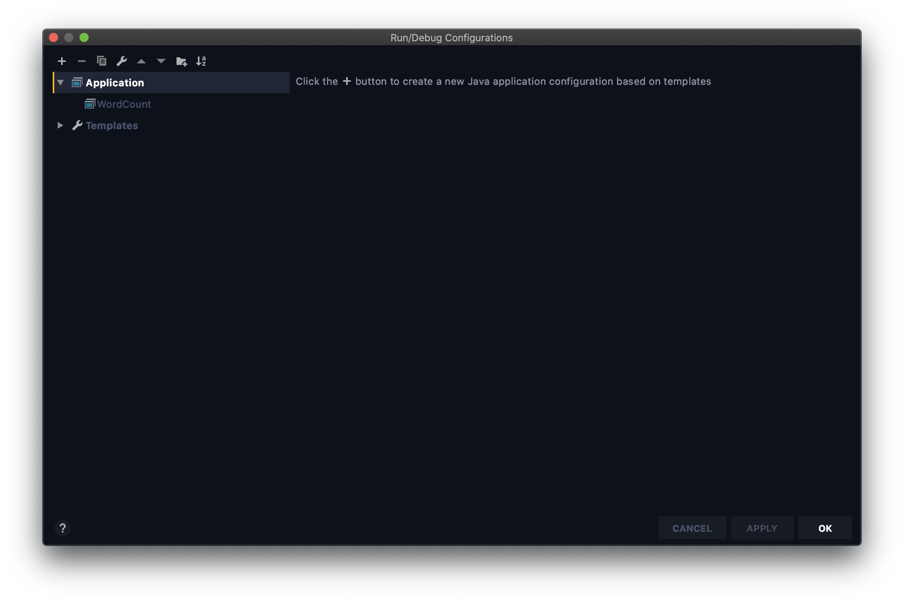

在之前的数篇笔记中我们从零开始完成了 Hadoop 分布式集群的搭建。从这一篇笔记开始，我们要通过 MapReduce 计算框架的学习和实践，将集群转化为生产力。
本篇是系列的第一篇笔记。本篇笔记中我们将会手写一个 Word Count 程序。
手写 Word Count
Hadoop 本地开发环境配置
我们的程序必须封装成 JAR 包才能提交给 Hadoop 运行。通过打包、上传再运行的方式来测试代码是很令人烦躁的。因此我们要在本地搭建一个 Hadoop 开发环境。以后的代码可以先在本地使用少量数据进行测试，然后再提交到集群运行。我的开发环境基于 Intellij 和 JDK 1.8，使用的是 Mac 操作系统。
添加 Modules
打开 File 下的 Project Structures，选择左侧边栏中的 Modules 标签，向项目添加 Hadoop JAR 包。JAR 包的位置在 hadoop 安装目录下的/share/hadoop文件夹内。点击窗口下方的小加号，选择JARs or directories，将以下文件夹添加到项目中：
- common
- hdfs
- mapreduce
- yarn
- common/lib
添加完成后的效果如图：
设置 Artifacts
选择左侧边栏中的 Artifacts 标签。点击中栏的加号选择JAR -> Empty。为 JAR 包取一个名字。接着点击右侧 output layout 下方的加号，选择Module output，选择当前项目。完成后的效果如图：
保存并关闭设置窗口。
如何运行程序
点击图片中的位置（位于窗口上边栏中部），选择Edit Configurations。
在弹出的窗口中点击左上方的加号，然后点击 Application。为 Config 取一个名字。

接下来在右侧填写项目运行的一些参数。在Main Class中填写org.apache.hadoop.util.RunJar。Working directory选择当前项目目录。Program arguments中可以根据需要填写参数。最前面的两个分别是 JAR 包所在位置和 main 函数所在的类。前者填写项目根目录/out/artifacts/myHadoop/myHadoop.jar。
根据你的 JAR 包名称灵活修改
而后两个参数对应输入和输出数据的位置。这里直接写成/input和/output。稍后运行程序前，我们要在项目根目录下创建 input 文件夹，并将数据放入其中。
运行程序前要保证 output 文件夹是空的